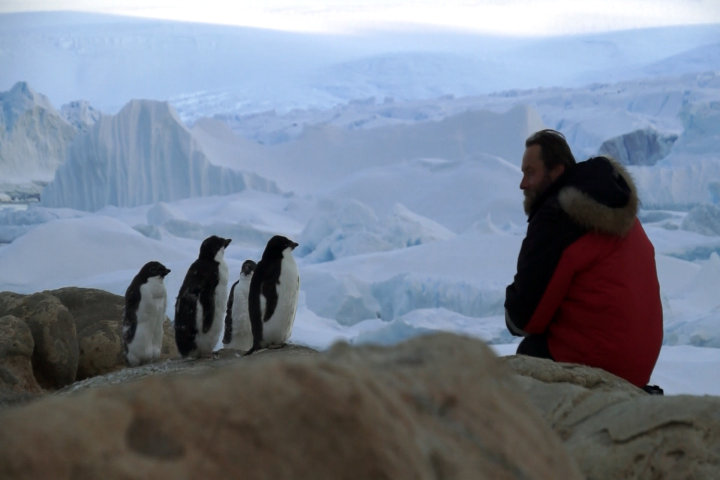
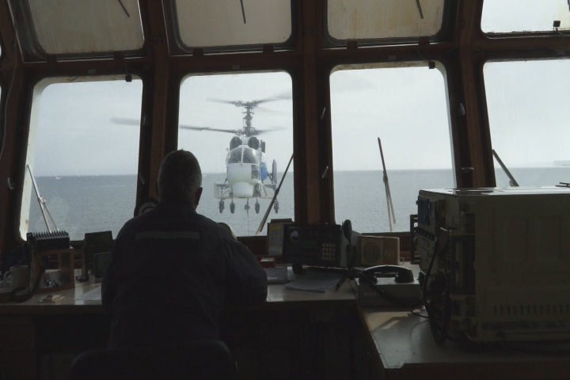
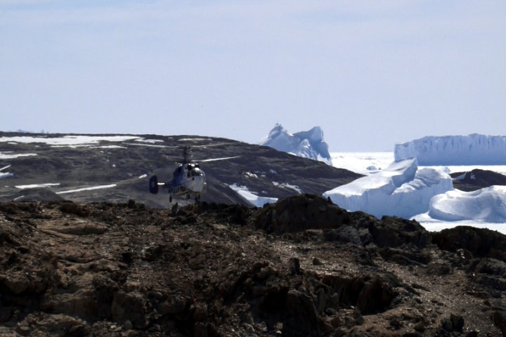
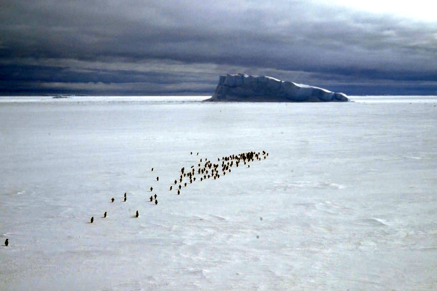
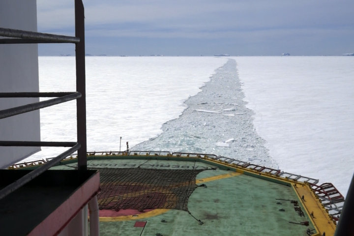
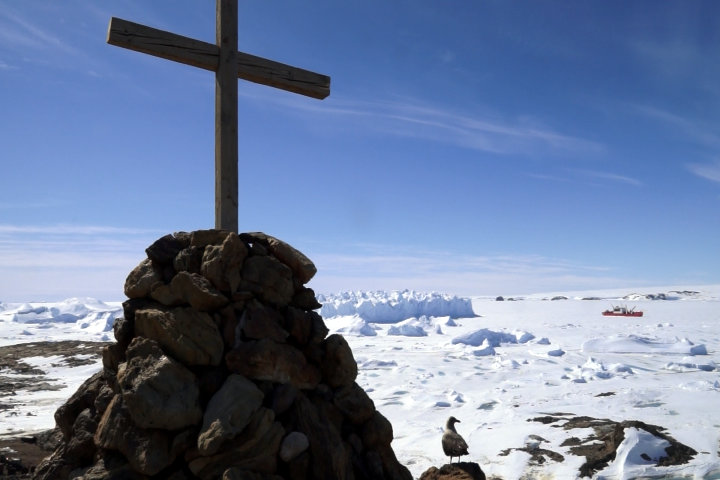

Антарктида - материк без границ. О полярниках в поиске полюса личной относительной недоступности. Взгляд человека за всеми свершениями, который на преодолении препятствий к ним, двигается по тому, единственно ему известному пути в кладовую человеческой души.
Автор сценария, режиссер и оператор – Евгений БархановГлавный приз "Лучший фильм кинофестиваля" XI-го Российского кинофестиваля "Золотой компас"(2017г.).
|  |
© «Студия Андрея Шемякина», 2016г., 52мин.